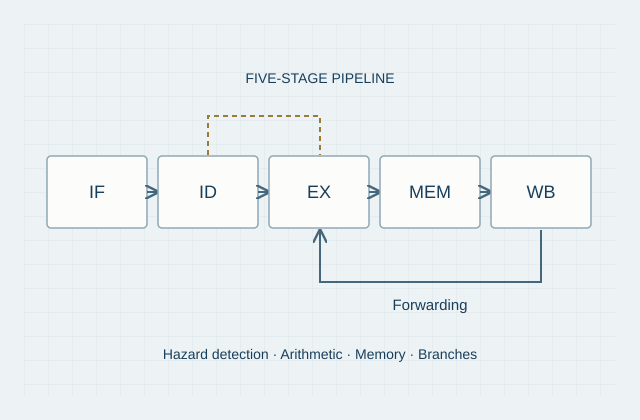
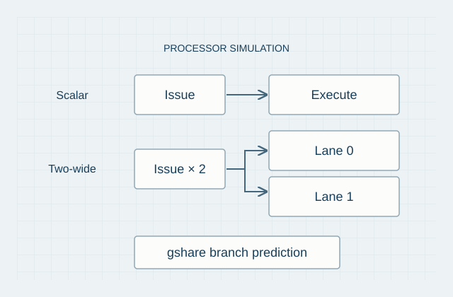
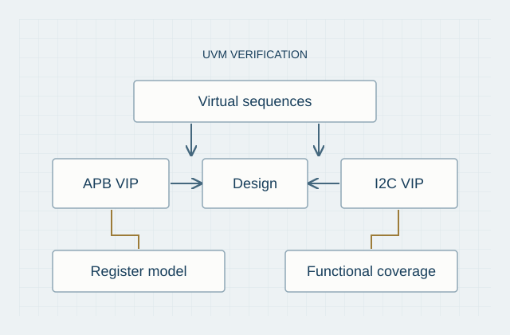

Georgia Institute of Technology
M.S. in Electrical and Computer Engineering
Focus: Computer Systems & Software; VLSI Systems & Digital Design
 Luoqi LiM.S. ECE Student · Georgia Tech
Luoqi LiM.S. ECE Student · Georgia Tech
Electrical & Computer Engineering
Digital design, verification,
and the systems in between.
I am a first-year M.S. student in Electrical and Computer Engineering at Georgia Tech, with interests in digital design, design verification, and computer architecture. I earned my B.S. in Electrical and Computer Engineering from the University of Washington.
My work focuses on understanding how hardware systems are designed, verified, and evaluated—from RTL and verification environments to processor pipelines and FPGA implementations. This portfolio documents selected projects, technical decisions, and lessons from building and testing these systems.
M.S. in Electrical and Computer Engineering
Focus: Computer Systems & Software; VLSI Systems & Digital Design
B.S. in Electrical and Computer Engineering
Minor in Applied Mathematics
GPA: 3.79/4.00 Department GPA: 3.83/4.00
Selected work
A closer look at hardware behavior—from processor pipelines to protocol verification and embedded systems.

From single-cycle execution to a five-stage pipeline.
Built single-cycle and five-stage pipelined CPU implementations supporting arithmetic, memory-access, and branch instructions. Implemented forwarding and hazard detection, and verified functionality using benchmarks.

Exploring scalar and two-wide superscalar execution.
C++ processor simulation modeling pipeline hazards, forwarding, and gshare branch prediction. The project examines instruction execution through scalar and two-wide superscalar pipelines.

Verifying register access and serial protocol behavior.
A verification environment using APB VIP and I2C VIP, with register modeling, functional coverage, and virtual sequences. Covers master/slave transmit and receive behavior, interrupts, clock stretching, and 10-bit addressing.

Motion-triggered capture meets food detection.
Led a five-person team to build a refrigerator vision system. Combined motion-triggered image capture with YOLO-based food detection in a Linux and C++ workflow.
Professional background
CICC · Internship
Conducted competitive analysis and supported the development of an internal AI-powered financial Q&A platform for fund managers and industry professionals. Contributed to product structure, front-end interaction design, and prompt engineering.